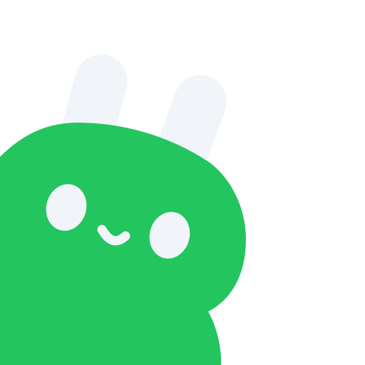

Conecta IAs y APIs desde un solo lugar Connect AI and APIs from one place
Plataforma web de código abierto para guardar tus credenciales cifradas, probar conexiones y chatear con modelos de IA — en tu propio servidor, sin depender de terceros.
An open-source web platform to store your credentials encrypted, test connections, and chat with AI models — on your own server, no third parties involved.
Este sitio es informativo: no corre la app en vivo. Instálala en minutos en tu propia máquina o servidor — mira cómo abajo. This site is informational only: it doesn't run the live app. Install it in minutes on your own machine or server — see how below.
¿Qué es Enlazia?
What is Enlazia?
Enlazia es una plataforma web bilingüe (español / inglés) y de código abierto para conectar proveedores de IA y APIs REST. Agregas tus credenciales una sola vez, Enlazia las guarda cifradas en tu propio servidor, y desde el navegador puedes probar conexiones, chatear con modelos y enviar peticiones REST. Tus claves nunca se devuelven al navegador.
Enlazia is an open-source, bilingual (Spanish / English) web platform for connecting AI providers and REST APIs. You add your credentials once, Enlazia stores them encrypted on your own server, and you can test connections, chat with models and send REST requests from the browser. Your API keys are never sent back to the browser.
Los conectores son manifiestos JSON simples: agregar un proveedor nuevo normalmente significa escribir un archivo JSON, no código. El servidor se empaqueta en un solo archivo, así que corre en hosting compartido (cPanel) sin Docker ni acceso root.
Connectors are plain JSON manifests, so adding a new provider or API usually means writing a JSON file, not code. The server is bundled into a single file, so it runs on shared hosting (cPanel) without Docker or root access.
Cómo funciona
How it works
Tres pasos, siempre con tus claves cifradas en tu servidor.
Three steps, your keys always encrypted on your own server.
Conecta
Connect
Elige un conector del catálogo (OpenAI, Anthropic, Gemini, GitHub, Stripe…) y pega tu API key. Se cifra con AES-256-GCM antes de guardarse.
Pick a connector from the catalog (OpenAI, Anthropic, Gemini, GitHub, Stripe…) and paste your API key. It's encrypted with AES-256-GCM before it's stored.
Prueba
Test
Enlazia valida la conexión y lista los modelos disponibles. Cada llamada queda registrada: método, URL redactada, estado y duración.
Enlazia validates the connection and lists available models. Every call is logged: method, redacted URL, status and duration.
Usa
Use
Chatea con cualquier modelo configurado en el Playground (streaming en vivo) o arma peticiones REST con el constructor de peticiones.
Chat with any configured model in the Playground (live streaming) or build REST requests with the request builder.
Funciones
Features
Todo lo necesario para administrar tus conexiones de IA y APIs en un solo lugar.
Everything you need to manage your AI and API connections in one place.
Bóveda cifrada
Encrypted vault
Credenciales cifradas en reposo con AES-256-GCM. La API nunca las devuelve.
Credentials encrypted at rest with AES-256-GCM. The API never returns them.
Playground con streaming
Streaming playground
Chatea con cualquier modelo configurado, con prompt de sistema y temperatura, vía Server-Sent Events.
Chat with any configured model, with system prompt and temperature, over Server-Sent Events.
22 conectores de IA
22 AI connectors
OpenAI, Anthropic, Gemini, Azure, DeepSeek, Groq, Mistral, xAI, OpenRouter y más, listos de fábrica.
OpenAI, Anthropic, Gemini, Azure, DeepSeek, Groq, Mistral, xAI, OpenRouter and more, out of the box.
SDK de conectores vía JSON
Connector SDK via JSON
Agrega un proveedor nuevo con un manifiesto JSON. Hay un JSON Schema para autocompletado en tu editor.
Add a new provider with a JSON manifest. A JSON Schema is provided for editor autocompletion.
Registro de peticiones
Request logs
Método, URL redactada, estado, duración y errores de cada llamada saliente, más estadísticas de 24 horas.
Method, redacted URL, status, duration and errors for every outgoing call, plus 24-hour stats.
Fácil de alojar
Easy hosting
El servidor se empaqueta en un solo archivo: corre en hosting compartido cPanel, sin Docker ni root.
The server is bundled into a single file: it runs on shared cPanel hosting, no Docker or root access.
Catálogo de conectores
Connector catalog
22 proveedores de IA y 4 APIs REST incluidos. Agregar uno nuevo es escribir un JSON.
22 AI providers and 4 REST APIs included. Adding a new one is just writing a JSON file.
Proveedores de IA
AI providers
APIs REST
REST APIs
Instalación rápida
Quick start
Requiere Node.js 22.13+ (usa node:sqlite nativo) y pnpm 11.
Requires Node.js 22.13+ (uses the built-in node:sqlite) and pnpm 11.
# clona el repositorioclone the repo
git clone https://github.com/CharlyDesigner/enlazia.git
cd enlazia
# instala y arranca en modo desarrolloinstall and start in dev mode
pnpm install
cp .env.example .env
pnpm devAbre http://localhost:5173. La API corre en :8787 y el frontend le hace proxy a /api.
Open http://localhost:5173. The API runs on :8787 and the frontend proxies /api to it.
Variables de entorno clave
Key environment variables
| Variable | Descripción |
|---|---|
| Variable | Description |
| ENLAZIA_PASSWORD | Contraseña de acceso, obligatoria si es accesible desde la red. |
| ENLAZIA_PASSWORD | Access password, required if reachable from the network. |
| ENLAZIA_MASTER_KEY | Llave de 32 bytes para cifrar credenciales (se genera sola si falta). |
| ENLAZIA_MASTER_KEY | 32-byte key to encrypt credentials (auto-generated if empty). |
| ENLAZIA_DEMO | Modo demo público: solo catálogo y documentación. |
| ENLAZIA_DEMO | Public demo mode: catalog and docs only. |
Producción / cPanel
Production / cPanel
El servidor se empaqueta en un solo archivo, así que puedes correrlo en hosting compartido con "Setup Node.js App" (Phusion Passenger), sin Docker ni acceso root.
The server bundles into a single file, so it runs on shared hosting with "Setup Node.js App" (Phusion Passenger), no Docker or root access needed.
pnpm build
pnpm startGuía completa: docs/deploy-cpanel.md
Full guide: docs/deploy-cpanel.md
Hoja de ruta
Roadmap
- Cliente MCP (conectar y administrar servidores Model Context Protocol)
- MCP client (connect to and manage Model Context Protocol servers)
- Importador de OpenAPI para generar conectores REST
- OpenAPI importer to generate REST connectors
- Más tipos de autenticación, incluyendo OAuth 2.0
- More auth types, including OAuth 2.0
- Modelos de imagen y audio
- Image and audio models
- Cuentas multiusuario
- Multi-user accounts
- Compilación de escritorio
- Desktop build
Código abierto, hecho para la comunidad
Open source, built for the community
Enlazia es Apache-2.0. Las contribuciones son bienvenidas, especialmente conectores nuevos. Es un proyecto independiente, inspirado en ideas de AionUi (Apache-2.0), sin código ni marca de AionUi.
Enlazia is Apache-2.0 licensed. Contributions are welcome, especially new connectors. It's an independent project, inspired by ideas from AionUi (Apache-2.0), with no AionUi code or brand included.